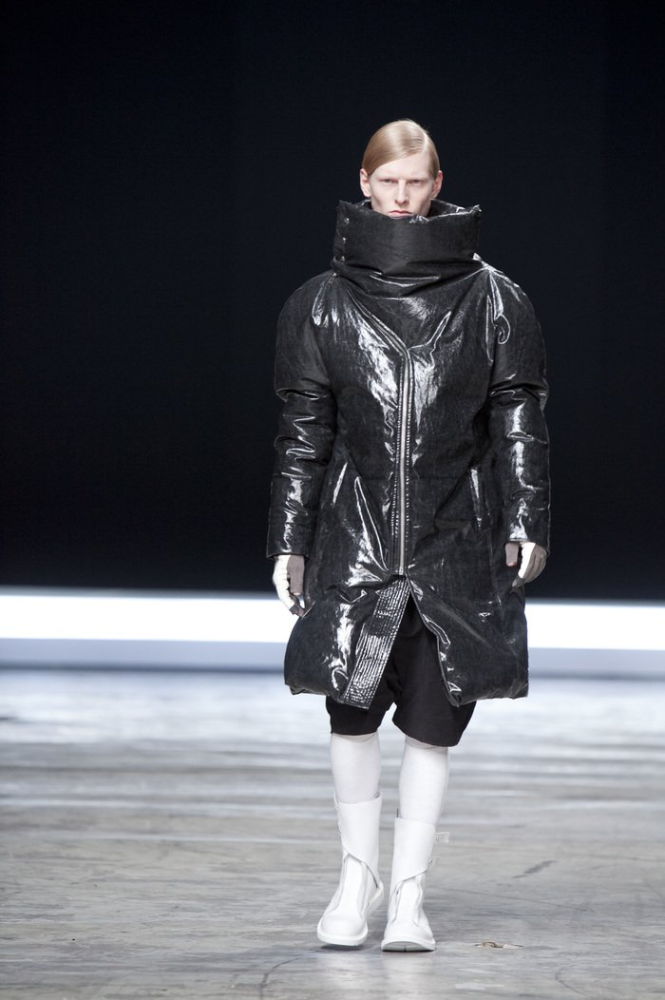

Rick Owens' "The Mountain" collection for Fall/Winter 2012 was a defining moment in the world of avant-garde fashion. This collection was characterized by its dark, dramatic, and innovative designs, which pushed the boundaries of contemporary fashion.
